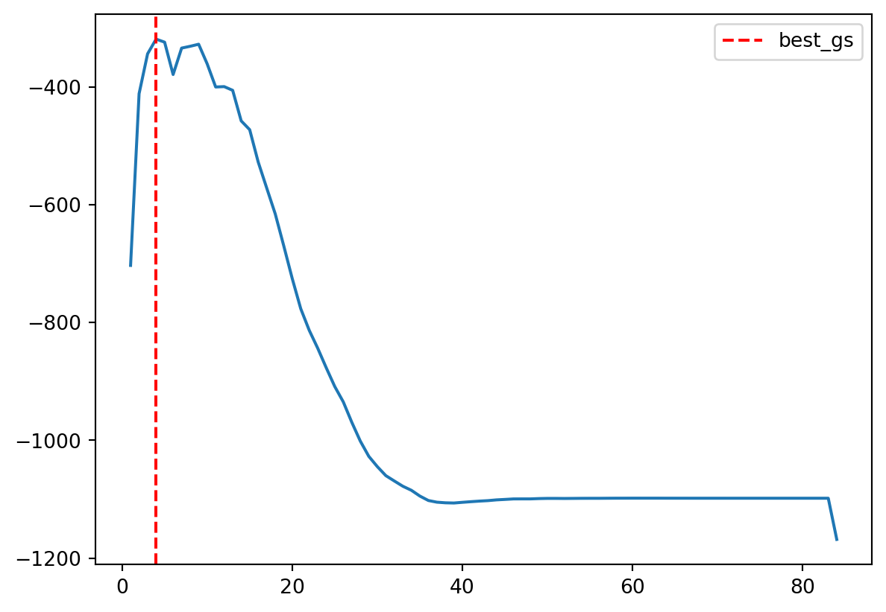

When the number of predictors is large or when predictors are highly correlated, directly fitting a regression model using the original predictors may lead to unstable estimates and poor predictive performance.
One approach to address this problem is dimension reduction. Instead of using the original predictors directly, we first construct a smaller number of derived variables (called components) and then perform regression using these components.
Two commonly used methods are
Principal Component Regression (PCR)
Partial Least Squares (PLS)
Both methods construct new variables that are linear combinations of the original predictors, but they differ in how those combinations are chosen.
5.1 Principal Component Regression (PCR)
PCR first applies principal component analysis (PCA) to the predictor matrix \(X\), and then uses the leading principal components as predictors in a regression model.
The key idea is that most of the variation in the predictors often lies in a lower-dimensional subspace.
Definition 5.1 (Principal Component Regression) Let \(X\) be the \(n \times p\) predictor matrix.
The principal components are defined as
\[
Z_k = X v_k,
\]
where \(v_k\) is the \(k\)-th eigenvector of the Gram matrix \(X^\top X\).
Principal component regression fits a linear model using the first \(m\) components:
\(Z_1,\ldots,Z_m\) are the first \(m\) principal components
\(m < p\) is chosen by cross-validation
Thus PCR replaces the original predictors with a smaller set of orthogonal components.
NoteKey feature of PCR
PCR constructs components using only the predictor matrix \(X\), without considering the response \(y\).
As a result, the directions that explain the most variation in \(X\) are not necessarily the directions that are most predictive of \(y\).
5.1.1 Data matrix and its geometric views
Let \(X \in \mathbb{R}^{n \times p}\) be a data matrix with \(n\) observations and \(p\) predictors. We assume columns are centered (\(\sum_{i=1}^n x_{ij} = 0\)) so that the origin represents the sample mean.
Column (variable) view: observation space \(\mathbb{R}^n\)
Each column of \(X_j\) is a vector in \(n\)-dimensional space, which represents one predictor across all observations.
This space is often called the observation space.
Geometry in this space describes relationships between predictors:
Inner products encode covariance.
After standardization, angles encode correlation.
Orthogonality corresponds to zero correlation.
Row (observation) view: feature space \(\mathbb{R}^p\)
Each row of \(x_i^\top\) is a vector in \(p\)-dimensional space, which represents one observation across all predictors.
This space is called the feature space.
Geometry in this space describes relationships between observations:
Euclidean distance measures dissimilarity.
Clustering and nearest-neighbor methods operate in this space.
Example 5.1
Click to expand.
To demonstrate the idea, we generate the following dataset. It contains 2 variables.
\(V \in \mathbb{R}^{p \times r}\), \(V^\top V = I\)
5.1.3 Principal components (PC)
Principal component analysis (PCA) constructs new variables as linear combinations of the original predictors. It builds upon SVD.
Let \(Z =XV=UD= \qty[Z_1, \dots, Z_r]=\mqty[z_{ij}]\) denote the principal components. Each principal component has the form \[
Z_j = X v_j=v_{1j}X_1+v_{2j}X_2+\ldots+v_{pj}X_p
\] where \(v_j=\mqty[v_{1j}&\ldots&v_{pj}]^{\top} \in \mathbb{R}^p\) is a unit vector.
Loadings (directions)
Each PC is a linear combination of the columns of \(X\).
Loadings (\(v_{ij}\)): The coefficients used to form PC \(Z_j\) are called loadings.
Loadings describe directions in feature space.
Scores (coordinates)
As a vector, each PC lies in \(\mathbb{R}^n\) (observation space).
Scores (\(z_{ij}\)): The coordinate of observation \(i\) along direction \(v_j\) is called the score.
Thus:
rows of \(Z\) = transformed observations,
columns of \(Z\) = principal components.
Example 5.2 (Centering and Scaling)
Click to expand.
We use the same previous dataset X, centering it as Xc and standarizing it as Xs.
Xc = X - X.mean(axis=0)Xs = Xc / Xc.std(axis=0)
Now we plot them together with the princial compoenent. pca() from sklearn will automatically centering columns. In order to show the sceanario, we use svd() from numpy.linalg to do the computation.
The principal component finds the direction that maximizes the variance of the projected data.
If the data are not centered, the optimization is no longer based purely on variance. In this case, the objective involves both the covariance structure and the mean of the data.
As a result, when the mean is large, the first principal direction may be strongly influenced by the location of the data, and can point roughly toward the data cloud rather than reflecting its intrinsic variation.
5.1.4 Covariance and Optimality
The sample covariance matrix is \(S = \frac{1}{n-1} X^\top X\). By SVD, \[
S=\frac{1}{n-1} X^\top X = V \frac{D^2}{n-1} V^\top
\]
\(V\): eigenvectors of covariance matrix
\(d_j^2/(n-1)\): eigenvalues of \(S\)
\(\Var(Z_j)=d_j^2/(n-1)\)
Therefore
First PC: Direction \(v_1\) that maximizes \(\Var(Xv_1)\) subject to \(\norm{v_1}=1\).
Subsequent PCs: Maximize remaining variance subject to orthogonality (that they are orthogonal to all previous PCs \(v_k^\top v_j = 0\) for \(j < k\)).
5.1.5 Summary
Component
Matrix
Space
Interpretation
Loadings
\(V\)
Feature (\(\mathbb{R}^p\))
Principal directions (rotation of axes)
Scores
\(Z = UD\)
Observation (\(\mathbb{R}^n\))
Transformed coordinates of observations
Normalized scores
\(U\)
Observation (\(\mathbb{R}^n\))
Directions of score vectors (unit length)
Singular values
\(D\)
—
Scaling of each component (spread)
Variance
\(D^2/(n-1)\)
—
Importance of each principal component
Columns of \(X\): variables in \(\mathbb{R}^n\) (relationships via angles)
Rows of \(X\): observations in \(\mathbb{R}^p\) (relationships via distance)
PCA finds orthogonal directions in feature space
\(V\) gives directions, \(Z\) gives coordinates
SVD unifies everything: \[
X = UDV^\top, \quad Z = XV = UD
\]
5.1.6 Choosing the number of components (\(m\))
Let \(\rank(X)=r\). PCA produces \(r\) components, but in practice we keep only the first \(m \le r\).
Define the truncated SVD: \[
X \approx X_m = U_m D_m V_m^\top,
\] where
\(U_m \in \mathbb{R}^{n \times m}\)
\(D_m \in \mathbb{R}^{m \times m}\)
\(V_m \in \mathbb{R}^{p \times m}\)
Correspondingly, \[
Z_m = X V_m = U_m D_m
\] contains the first \(m\) principal components.
Keeping the \(m\) largest singular values gives the best rank-\(m\) approximation of \(X\) in least squares sense.
5.1.6.1 Variance explained
The total variance is \[
\sum_{j=1}^r \frac{d_j^2}{n-1},
\] and the proportion explained by the first \(m\) components is \[
\frac{\sum_{j=1}^m d_j^2}{\sum_{j=1}^r d_j^2}.
\]
5.1.6.2 Choosing \(m\) for prediction (PCR)
In predictive settings, \(m\) is typically selected via cross-validation:
Compute principal components.
Fit regression models using \(m = 1,2,\ldots,r\) components.
Evaluate validation error.
Choose \(m\) with the lowest validation error.
NoteScree plot (Elbow method)
The scree plot (elbow method) plots \(d_j^2\) against \(j\) and selects \(m\) at the point where the marginal gain in variance explained drops sharply (the “elbow”). This identifies the number of components that captures most of the variation in \(X\).
However, PCA is unsupervised: directions that explain high variance in \(X\) do not necessarily have strong predictive power for \(y\). Therefore, in predictive settings such as PCR, \(m\) is typically chosen via cross-validation rather than the elbow method.
For unsupervised tasks (e.g., representation or clustering), the scree plot remains a reasonable and commonly used choice.
5.2 PCR in Python
5.2.1 PCA
scikit-learn provides PCA for computing principal components. To demonstrate the code we use the same dataset from lasso.
pca is an unsupervised learnning method. Therefore to perform it we only need X.
from sklearn.decomposition import PCApca = PCA().fit(X_train)
All important information can be accessed from the returned object.
V = pca.components_.T # loadings (V)Z = pca.transform(X_train) # scores (Z)D = pca.singular_values_ # singular values (D)var = pca.explained_variance_ # variance that are explainedratio = pca.explained_variance_ratio_ # the ratio of variance that are explained
With var and ratio, we may plot the scree plot (although we won’t really use it to select the number of components).
The maximal possible number of components depends on the shape of X. However for cross-validation, the number of rows of X is reduced due to the split. Therefore we have to estimate this number in order to avoid “n_components out of bounds” warning.
19
It shows that 19 is the best number. Then we check the test result.
One limitation of Principal Component Regression (PCR) is that it is unsupervised: the principal components depend only on \(X\) and ignore the response \(y\). As a result, directions with large variance in \(X\) may not be relevant for predicting \(y\).
Partial Least Squares (PLS) addresses this by constructing components that are guided by the response. It seeks directions in the predictor space that are both:
informative about \(X\), and
strongly related to \(y\)
Definition 5.2 (Partial Least Squares) Partial least squares constructs a sequence of components
\[
Z_k = X w_k
\]
where the weight vector \(w_k\) is chosen to maximize the covariance between the component and the response: \[
w_k =\arg\max_{\norm{w}=1}\Cov(Xw, y).
\]
After constructing the component \(Z_k\), both the predictor matrix \(X\) and the response \(y\) are deflated, and the procedure is repeated to construct additional components.
5.3.1 Algorithm intuition
PLS constructs components sequentially, with each step explicitly targeting predictive power for \(y\), rather than variance in \(X\).
Step 1: Find the direction. Choose a direction \(w_k \in \mathbb{R}^p\) such that the component \(Z_k = X_k w_k\) maximizes covariance with \(y_k\). \[
w_k =\arg\max_{\norm{w}=1}\Cov(X_kw, y_k)
\]
Step 2: Define the \(k\)-th component (also called the score vector): \[
Z_k=X_kw_k\in\mathbb R^n
\]
This is a linear combination of predictors
Represents the direction in \(X\) most aligned with \(y_k\)
Step 3: Fit a simple regression of \(y_k\) on \(Z_k\): \[
y_k=c_kZ_k+\resid
\] This captures how strongly the component explains \(y_k\).
Step 4: Deflation: remove the variation explained by \(Z_k\) from both \(X_k\) and \(y_k\).
Update response: \(y_{k+1}=y_k-c_kZ_k\)
Update predictors: \(X_{k+1}=X_k-Z_kp_k^\top\), where \(p_k=\frac{X_k^\top Z_k}{Z_k^\top Z_k}\).
\(p_k\) are the loadings for reconstructing \(X\)
Deflation ensures the next components capture on new information
Step 5: Repeat the process for \(k = 1, 2, \dots, m\).
5.3.2 Key properties
PLS has several important structural properties:
The components \(\{Z_1, Z_2, \dots\}\) are constructed sequentially.
Each component explains the remaining variation in \(y\).
After deflation, the components are orthogonal.
The ordering reflects predictive importance.
At each step, the main quantities have distinct roles:
Quantity
Interpretation
\(w_k\)
Direction in feature space used to combine predictors
\(Z_k = X_k w_k\)
Score (component), representing projected data
\(p_k\)
Loading, describing how the component explains \(X\)
Together, these quantities describe how information is extracted from \(X\) and transferred to explain \(y\).
5.3.3 Comparison with PCA
The key difference between PCA and PLS lies in how the directions are chosen:
Method
Criterion
Interpretation
PCA
maximize \(\operatorname{Var}(Xw)\)
captures structure of \(X\)
PLS
maximize \(\operatorname{Cov}(Xw, y)\)
targets prediction of \(y\)
PCA captures the internal structure of \(X\), while PLS focuses on directions that are useful for predicting \(y\).
5.3.4 Geometric meaning (Krylov Subspace)
The matrix \(X\) defines a cloud of points in \(\mathbb{R}^p\) and the response \(y\) defines a direction in \(\mathbb{R}^n\).
PLS finds directions \(w_k\) such that the projections \(Z_k = X w_k\) are maximally aligned with \(y\) in the observation space. In this sense, PLS can be understood geometrically as searching for directions in predictor space that align with the response.
To be more precise, it can be explained using Krylov subspaces.
Click to expand.
The Krylov subspace provides a structured way to generate directions for solving regression problems. Instead of searching the entire feature space \(\mathbb{R}^p\), it builds a sequence of low-dimensional subspaces that are tailored to the problem.
Given a matrix \(A \in \mathbb{R}^{p \times p}\) and a vector \(b \in \mathbb{R}^p\), the Krylov subspace of order \(k\) is defined as \[
\mathcal{K}_k(A, b)
=
\operatorname{span}\{b,\; Ab,\; A^2 b,\; \dots,\; A^{k-1} b\}.
\]
The subspaces are nested, meaning \(\mathcal{K}_1 \subseteq \mathcal{K}_2 \subseteq \cdots\), and the dimension cannot exceed \(\rank(A)\). Therefore, the sequence stabilizes after at most \(\rank(A)\) steps.
5.3.4.1 Krylov Subspace in Regression
In linear regression, we take \[
A = X^\top X, \qquad b = X^\top y.
\]
The vector \(X^\top y\) represents directions in the predictor space that are most correlated with the response, while \(X^\top X\) encodes the covariance structure of the predictors. As a result, the Krylov subspace captures directions that are both aligned with \(y\) and consistent with the geometry of \(X\).
5.3.4.2 Connection to PLS
Partial Least Squares constructs its directions sequentially within the Krylov subspace: \[
w_k \in \mathcal{K}_k(X^\top X,\; X^\top y).
\]
This means that PLS does not search over all possible directions in \(\mathbb{R}^p\). Instead, it expands a problem-dependent subspace step by step, starting from \(X^\top y\) and incorporating higher-order interactions through \(X^\top X\).
The number of components is therefore bounded by \[
m \le \dim(\mathcal{K}_k) \le \rank(X).
\]
Note
The Krylov subspace can be viewed as a guided search path inside \(\operatorname{span}(X)\). The first direction is determined by \(X^\top y\), and subsequent directions refine this information by incorporating the covariance structure of the predictors.
In this sense, the Krylov subspace represents the portion of the feature space that is relevant for predicting \(y\). Methods such as PLS operate within this space, focusing on directions that carry predictive signal rather than exploring the entire feature space.
5.4 PLS in Python
Although the algorithm is different, the code is very similar to PCR. PLS is implemented by PLSRegression from sklearn.cross_decomposition. The argument scale=True is by default so we don’t need to attach standardizer to it.
We choose the default number of componenets (which is 2) here. The specific hyperparameter will be tuned later by cross-validation.
from sklearn.cross_decomposition import PLSRegressionpls = PLSRegression()pls.fit(X_train, y_train)
We could use the following code to get access to the parameters.
Similar to PCR, we need to choose the number of components. Since PLS is fit inside cross-validation, the maximum number of components should be no larger than the number of observations in each training fold.
Test RMSE: 333.9484272722302
Test R^2 : 0.8598720672844287
The validation curve shows how the cross-validation error changes as the number of PLS components increases.
import matplotlib.pyplot as pltplt.plot(param_grid["n_components"], gs_pls.cv_results_["mean_test_score"])plt.axvline( gs_pls.best_params_["n_components"], linestyle="--", color="red", label="best_gs",)plt.legend()

NoteImportant Notes
PLSRegression automatically centers and scales the predictors by default.
Unlike PCR, PLS uses both \(X\) and \(y\) when constructing components.
The number of components should be chosen by cross-validation.
Very large numbers of components are usually unnecessary and may lead to numerical warnings.
The results for this dataset are summarized in the following table.
Test RMSE
Test R²
Best param
Model
OLS
1212.5155
0.491217
NaN
RidgeCV
274.2522
0.884921
alpha=10.0
LassoCV
221.7648
0.906945
alpha=0.4608014833934263
PCR
321.0763
0.865273
n_components=19
PLS
333.9484
0.859872
n_components=4
Note that PCR and PLS do not perform as well as ridge and lasso in this example. A key reason lies in how the dataset is generated.
The coefficient vector \(\beta\) is sparse: only a small number of predictors (10 out of 100) are truly relevant.
The noise level is relatively high, making signal recovery more difficult.
More importantly, the variation in \(X\) is driven by a low-dimensional latent structure (\(Z A\)), while the true signal depends on a sparse set of original predictors. As a result, the directions of largest variance in \(X\) are not necessarily aligned with the directions that predict \(y\).
Since PCR relies only on variance in \(X\), and PLS is still influenced by this structure, both methods may fail to recover the true signal efficiently. In contrast, ridge and lasso operate directly on the original predictors, with lasso particularly well-suited for identifying sparse signals.
5.4.2 Another example
Now let us look at another example. In this setting, we construct \(X\) so that most of its variance comes from irrelevant noise, while the true signal has low variance but determines \(y\). Specifically, \[
y = Z_1 b + \varepsilon_Y, \quad
X = Z_1 A_1 + Z_2 A_2 + \varepsilon_X.
\]
This setup has the following properties:
\(Z_1\) (signal) has low variance, while \(Z_2\) (noise) has high variance.
\(y\) depends only on \(Z_1\).
Therefore, the predictive signal lies in low-variance but structured (low-rank) directions of \(X\).
For simplicity, we take \(Z_1\) to be one-dimensional in the following example.
In this example, PCR and especially PLS tend to outperform ridge and lasso.
PCR can recover the signal if enough components are included, even though the signal lies in low-variance directions.
PLS performs particularly well because it uses \(y\) when constructing components, allowing it to directly identify directions associated with the response.
Ridge and lasso shrink coefficients based on the observed predictors. Since the signal is weak (low variance) and spread across many features through \(A_1\), it is harder for them to isolate and recover it.
Caution
Important predictive directions do not have to correspond to directions of large variance.